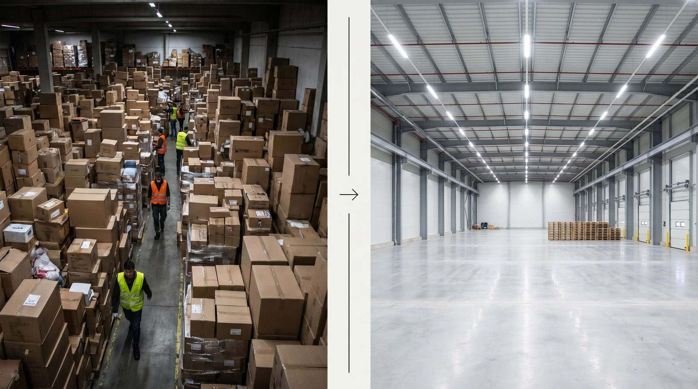

Det er en af de svaereste beslutninger i en vaeksende logistikvirksomhed: hvornaar er det tid til at flytte til et stoerre lager? Venter du for laenge, betaler du med ineffektivitet, tabte salg og frustrerede medarbejdere. Rykker du for tidligt, betaler du for mange kvadratmeter, du ikke bruger.
Der er ingen perfekt timing. Men der er klare signaler, som fortaeller dig, at du er ved at ramme graeensen for det nuvaerende lokale, og en metode til at beregne, hvad en flytning faktisk koster.
Denne guide hjaelper dig med at tage den beslutning paa et faktabaseret grundlag frem for en magefornemmelse.
👉 SmartPack giver dig kapacitetsdata til at tage beslutningen paa rette tidspunkt. Se hvad systemet kan vise dig
De fem klare signaler om at det er tid
Disse signaler, enkeltvis eller i kombination, indikerer at du naermer dig graeensen:
- Over 85% kapacitetsudnyttelse kontinuerligt: Et lager, der konstant koerer paa 85-90% fyldt, har ingen buffer. En ekstra leverance fra en leverandoer, og du har et pladsmaessig problem. Peak-perioder er umulige at haandtere.
- Medarbejdere arbejder ineffektivt pga. plads: Naar folk skal flytte paller for at komme til ordrevarer, naar gangene er for smalle til to gaffeltrucks, og naar pakkebordet er omgivet af midlertidigt placerede kasser, er det dyrt ineffektivitet.
- Du bruger eksternt overflow-lager regelmaessigt: Midlertidigt eksternt lager til peak er fint. Hvis du bruger det 3-4 maaneder om aaret, betaler du for to lagre, haandterer to flow og taber tid paa transport imellem dem.
- Leverandoerlevering er et problem: Naar du ikke kan modtage fulde leverancer, fordi du ikke har plads, saelger du hverken til den rigtige pris (bulkrabatter) eller paa de rigtige tidspunkter.
- Du afviser ordrer eller produktkategorier: Naar din pladsbegraensning forhindrer dig i at udvide sortimentet eller tage imod store ordrer, er vaeekskosten af det nuvaerende lager direkte maalbar.
Hvad en lagerflytning faktisk koster
Mange undervurderer den reelle pris. Her er en realistisk opgoerele:
- Fysisk flytning: Lejet spaevogn, extern hjaelp eller intern indsats. Typisk 20.000-80.000 kr. for et mellemstort lager.
- Opsaetning af det nye lager: Reoler, skilte, lokationskoder, etikettering. 30.000-150.000 kr. afhaengigt af kompleksitet.
- Systemopsaetning: Opdatering af WMS med nye lokationer, test af flows, genoplaeering af medarbejdere. Typisk 1-3 uger med reduceret produktivitet, svarende til 50.000-200.000 kr. i tabte pakketimer.
- Kontraktuelle omkostninger: Opsigelse af eksisterende leje, sikkerhedsstillelse for nyt lokale, eventuelle lejaendringer. Varierer meget.
- Adresseskift: Opdatering hos alle leverandoerer, kunder, fragtleverandoerer og offentlige registre. Undervurderet tidsforbrug.
Samlet koster en flytning af et mellemstort e-handelslager typisk 100.000-400.000 kr. naar alt er lagt sammen. Det er en investering, men det er en investering, der giver afkast i effektivitet.
Vaeelg det rigtige naeste lager
Den stoerste fejl ved lagerflytning er at koebe sig akkurat nok plads. Et lager, du er fuldt i om 18 maaneder, er et dyrt valg. Overvej:
- Hoejde over kapacitet: Et lager med 8-10 meters frihoejde giver langt mere opbevaringsvolumen end et 5 meters lager med samme gulvareal. Hoejtlaegring er billigere end at leeje mere gulv.
- Ekspansionsmuligheder: Kan du leje ekstra arealer i samme bygning eller nabohal, naer du vaekster? Det er vaerd at betale lidt mere for den mulighed.
- Placering og logistik: Er det naer fragtterminaler? Er adgangsforholdene til tunge lastbiler gode? Er der tilstraekkelig parkering til medarbejderne?
- Planlaeg for 3-5 aars vaekst: Et lager, der er for lille om tre aar, vil koste dig en ny dyr flytning. Vaekst-buffer er sjeldent spildt investering.
Saadan planlaegger du selve flytningen
En godt planlagt flytning minimerer driftsforstyrringerne. Principper:
- Planlaeg flytningen udenfor peak-perioder. Februar og august er typisk lavtrafikmaaneder i dansk e-handel.
- Flyt i etaper, ikke alt paa een gang. Opsaet det nye lager, koeeer begge parallelt i en uge, flyt derefter resten.
- Vaer aaben med kunderne. En kort kommunikation om potentielle forsinkelser i flytningsperioden er bedre end ingen kommunikation.
- Gennemgaa alle lokationskoder i WMS foer flytning. Flytningen er et godt tidspunkt at rydde op i det, der aldrig fungerede.